Curriculum/Computational methodsCMS 507
Machine learning for materials
Machine learning (ML) fits flexible functions to data. In materials science it supplies fast surrogates for expensive simulations, extracts structure–property relationships from experiments, and guides which calculation or experiment to do next. It interpolates well and extrapolates badly, and most of the craft lies in knowing the difference.
- Reading time
- about 15 min
- Builds on
- CMS 501: Density functional theory
CMS 502: Molecular dynamics
COMP 101: Programming and workflow
MATH 303: Statistics - Leads to
- —
- Level
- Graduate: simulation methods
- Describe the main uses of ML in materials and the workflow for a supervised model.
- Choose descriptors and a model suited to the amount and kind of data.
- Validate a model honestly, including with grouped cross-validation and baselines.
- Explain how machine-learned interatomic potentials and active learning work, and recognise the common pitfalls.
1. Where machine learning fits#
The methods in the earlier topics are built from physical laws, which give reliable predictions but at a computational cost that limits how many materials, structures or conditions can be examined. ML trades some of that generality for speed: it learns a mapping from inputs to outputs from examples, then evaluates it in microseconds. The main uses in materials are:
- Property prediction. Predict a property (formation energy, band gap, strength, hardness, fatigue life) from composition, structure or processing history.
- Interatomic potentials. Reproduce DFT energies and forces for molecular dynamics at a fraction of the cost (Section 8).
- Surrogate models. Replace a slow simulation (a finite-element model, a phase-field run) by a fast approximation to allow optimisation or uncertainty analysis.
- Inverse design and discovery. Search a large space of compositions or processes for ones meeting a target, with the model proposing the next candidate (Section 9).
- Characterisation. Segment and classify micrographs, identify phases from diffraction patterns, analyse spectra, extract data from the literature.
All of these rely on the premise that similar inputs give similar outputs. They work where the data cover the question and fail where they do not. The “learning” is statistics, not understanding, so ML is best treated as one more tool beside the physical models, and its predictions as hypotheses to test.
2. The workflow#
- Define the target and the decision it informs: what accuracy is useful, and what error would be harmful?
- Collect and clean data (Section 3), documenting its origin.
- Featurise: convert each material or process into numbers (Section 4).
- Split the data into training, validation and test sets in a way that mimics the intended use (Section 6).
- Train and tune models, starting with simple ones and a trivial baseline.
- Validate on the held-out test set; examine errors, not only averages; quantify uncertainty.
- Deploy and monitor: check predictions against new measurements and retrain as data grow.
Supervised learning (input–output examples) covers regression (continuous property) and classification (phase present or not, stable or unstable). Unsupervised learning finds structure without labels: clustering of microstructures, dimensionality reduction (PCA, t-SNE, UMAP) to visualise a composition space or a set of atomic environments.
3. Data#
Data are almost always the limiting factor. Computed data are abundant and consistent (Materials Project, OQMD, AFLOW, JARVIS, NOMAD; see the introduction), with hundreds of thousands of DFT entries; experimental data are scarcer, noisier and heterogeneous, with typical industrial datasets of tens to thousands of samples.
- Small data. A few hundred points constrain a model to be simple; complex models memorise. Use strong prior information (physics-based features), simple models and cross-validation.
- Bias. Published and tested materials are those that worked. A model trained only on successes cannot learn what fails; record negative results.
- Heterogeneity. The same nominal property measured in different laboratories, specimens or conditions differs. Record the conditions (temperature, strain rate, grain size, heat treatment) as features or normalise carefully.
- Quality. Remove duplicates, check units and outliers, and keep a record of every cleaning step. Errors in the training data are learned.
- Provenance. Store raw data, code and software versions so that results can be reproduced and data reused (FAIR principles: findable, accessible, interoperable, reusable).
4. Descriptors#
A model needs each material as a fixed-length vector of numbers, the descriptor or feature vector. Good descriptors encode the physics that matters; they are the main way prior knowledge enters.
| Descriptor type | Examples | When to use |
|---|---|---|
| Composition-based | Statistics (mean, range, deviation) of elemental properties such as radius, electronegativity, valence electrons, melting point (the “Magpie” set) | When the structure is unknown, for example in alloy and glass composition screening |
| Structure-based | Radial and angular distribution functions, Coulomb matrix, smooth overlap of atomic positions (SOAP), symmetry functions, atomic cluster expansion | When atomic positions are given; essential for potentials and structure–property maps |
| Graph-based (learned) | Crystal graphs where atoms are nodes and bonds are edges; message-passing and equivariant neural networks learn the features | Large datasets of structures |
| Process and microstructure | Composition, heating and cooling temperatures, times and rates, rolling reduction, grain size, phase fractions | Experimental property prediction for alloys and processes |
| Physics-derived | Quantities from CALPHAD or DFT, such as phase fractions, driving forces, stacking-fault energy, diffusivity | When the output is governed by thermodynamics or kinetics that a simulation can estimate |
The libraries matminer, pymatgen and DScribe compute many of these. Two rules help: features must be invariant to things that should not matter (atom labelling, rotation, translation, choice of unit cell), and the number of features should be small compared with the number of samples, or regularisation must control it.
5. Models#
| Model | Suited to | Strengths | Weaknesses |
|---|---|---|---|
| Linear, ridge, LASSO | Tens to thousands of samples | Simple, interpretable; LASSO selects a sparse set of features | Cannot capture strong nonlinearity |
| Gaussian process, kernel ridge | Small to medium data | Smooth interpolation; Gaussian process gives uncertainty; basis of several interatomic potentials | Cost grows as N3 with training set size (approximations exist) |
| Random forest, gradient-boosted trees | Tabular data of hundreds to hundreds of thousands | Robust, little tuning, handle mixed features, give importances | Cannot extrapolate beyond the training range; piecewise-constant predictions |
| Neural networks (fully connected) | Large data | Flexible; scales to millions | Needs more data and tuning; harder uncertainty |
| Graph and equivariant networks | Large structural datasets, potentials | Learn descriptors; built-in symmetries give data efficiency | Costly to train; need care with out-of-distribution structures |
| Symbolic regression and sparse models (for example SISSO) | Small data with physical intuition | Produce compact formulas that can be inspected | Search is expensive; results sensitive to the candidate features |
A sensible rule is to begin with the simplest model that could work and a trivial baseline (always predicting the mean, or a physical rule of thumb), and to add complexity only while the validation error keeps improving.
6. Validation#
The goal of a model is accuracy on new cases, not on the data it was trained on. A flexible model can fit its training data perfectly and still predict poorly, as the animation shows: a straight line is too simple (underfitting, high bias), a moderate polynomial captures the trend, and a high-degree polynomial threads through every noisy point but oscillates wildly in between (overfitting, high variance).

Splits and cross-validation
Reserve a test set that is never used for fitting or tuning, and use k-fold cross-validation on the rest to choose models and hyperparameters. Materials data need extra care because samples are not independent: many entries in a database are small variations of the same chemistry, so a random split puts near-duplicates in both training and test sets and gives optimistic scores. Better splits for materials are:
- Grouped splits: all members of a chemical family, composition system or alloy heat stay together (leave-one-cluster-out).
- Time-based splits: train on older experiments, test on newer ones, as the model will actually be used.
- Extrapolation tests: hold out the highest or lowest values of the target, or new chemical systems, and measure the degradation in accuracy.
Metrics and diagnostics
Report mean absolute error (MAE, in the units of the property), RMSE and R2, and always compare with a baseline model; a parity plot (predicted against measured) shows where the errors are; a learning curve (error against training-set size) shows whether more data would help or whether the model or descriptors are the limit. Absolute accuracy matters less than accuracy relative to the spread in the data and to the difference you need to resolve.
7. Uncertainty#
A prediction without an uncertainty is hard to act on. Two kinds exist: aleatoric (noise in the data, irreducible) and epistemic (lack of data in this region, reducible). Methods include the predictive variance of Gaussian processes, the spread of an ensemble of models trained on resampled data or with different initialisations, dropout-based estimates, and conformal prediction, which gives intervals with a guaranteed coverage under mild assumptions. Check calibration: among predictions with 90% intervals, about 90% of true values should fall inside. The applicability domain, the region of descriptor space where training data exist, should be part of the model: a prediction far from all training points is a guess, whatever the number looks like.
8. Machine-learned interatomic potentials#
The most successful use of ML in atomistic modelling is the machine-learned interatomic potential (MLIP). It writes the energy of a configuration as a sum of atomic contributions, each a learned function of the neighbourhood of an atom within a cutoff, and trains on DFT energies, forces and stresses:
E = Σi ε( descriptor of the environment of atom i ), Fi = −∇i EBecause forces come from differentiating a single energy function, energy is conserved. The function must be invariant to translation, rotation and swapping identical atoms, which is built into the descriptors (SOAP, symmetry functions, atomic cluster expansion) or into the architecture (equivariant message-passing networks such as NequIP and MACE). Families include the Behler–Parrinello neural-network potentials, Gaussian approximation potentials, moment tensor potentials, SNAP, and equivariant graph networks.
| Classical (EAM, Tersoff) | Machine-learned | DFT | |
|---|---|---|---|
| Cost per atom per step | ∼ 1 µs | ∼ 10 µs to 10 ms (depends on model) | ∼ 1 to 1000 s |
| Accuracy versus DFT (typical) | Tens to hundreds of meV/atom for complex properties | Few meV/atom in energy; 20–100 meV/Å in forces | Reference |
| Transferability | Limited by the functional form | Good inside training data; poor outside | General |
| Effort to build | Months of parameter fitting by experts | Generating training data and training | None |
Building one properly
- Training data must span what the simulation will visit: perfect crystals, strained cells, defects, surfaces, liquid configurations, high-temperature MD snapshots, and saddle points if barriers matter.
- Active learning: run MD with the current potential, flag configurations where an ensemble of potentials disagrees (high uncertainty), label them with DFT, retrain, and repeat. This is how a potential becomes robust without enormous databases.
- Validate on properties, not only on a test set of energies. A low error on held-out DFT frames does not guarantee a correct lattice constant, elastic constants, phonons, defect energies, stacking-fault energies or melting point. Check those, as for any interatomic potential.
- Watch for the loss of physics at short range (atoms colliding) and long range (electrostatics, dispersion), which are not captured by a finite cutoff unless added explicitly.
Universal (foundation) potentials such as M3GNet, CHGNet and MACE-MP-0 were trained on large databases of DFT relaxations covering most of the periodic table, and give a reasonable first answer for almost any inorganic system. A known limitation is systematic softening of the energy surface (underestimated vibration frequencies and barriers), so results should be checked against DFT or the potential fine-tuned on a small set of system-specific calculations.
9. Active learning and design#
When evaluating the true function (an experiment, a DFT calculation) is expensive, ML can decide what to evaluate next. Bayesian optimisation fits a surrogate with uncertainty (typically a Gaussian process) to the data collected so far and picks the next point by maximising an acquisition function that balances exploitation (high predicted value) and exploration (high uncertainty), such as expected improvement or upper confidence bound. It can find good alloys or process settings in tens of experiments where a grid would need thousands. Multi-objective versions search for the Pareto front of trade-offs (for example strength against ductility). Combined with automation, these loops form “self-driving laboratories”. The same logic improves training sets for potentials and surrogates (Section 8).
Design is an extrapolation task: the goal is a material better than those in the data. Treat the predictions as candidates to verify by experiment or by a physics-based calculation, not as results.
10. Combining with physics#
- Physics-based features (thermodynamic phase fractions, driving forces, computed diffusivities) as model inputs improve accuracy on small datasets.
- Hybrid models let ML correct the error of a physical model (a residual) or supply a term inside it, for example a flow stress inside a finite-element model, so the physical structure keeps the extrapolation sensible.
- Multi-fidelity and transfer learning: pre-train on abundant cheap data (simulation, lower-accuracy DFT) and fine-tune on scarce accurate data (experiments).
- Constraints such as monotonic dependence on temperature, positivity, conservation laws or symmetry can be imposed in the architecture or loss. Physics-informed neural networks add the residual of a differential equation to the loss so the network solves the PDE; they are useful for inverse problems with sparse data but are generally slower and less accurate than conventional solvers for forward problems.
- Interpretation. Feature importances, partial-dependence plots and SHAP values indicate which inputs drive predictions. They show association learned from the data, not causation, and should be compared against known mechanisms.
11. Common pitfalls#
- Data leakage. Information from the test set influences training: near-duplicates across splits, normalisation computed on all data before splitting, features that are functions of the target.
- Tuning on the test set. Repeated peeking turns the test set into a validation set; keep a final untouched set.
- No baseline. A model with R2 = 0.8 may be worse than a simple rule that gives 0.85.
- Extrapolation presented as interpolation. High scores on random splits hide failure on new chemistry.
- Ignoring uncertainty and the applicability domain.
- Confusing correlation with mechanism, especially in observational process data where variables are correlated by how the plant is run.
- Irreproducibility. Unrecorded random seeds, software versions or data versions.
12. A short program#
A random-forest regression validated with grouped cross-validation and compared with a mean-value baseline, using scikit-learn. X, y and groups come from your own dataset: groups gives the chemical family or alloy system of each row so that related samples are never split between training and testing.
import numpy as np
from sklearn.ensemble import RandomForestRegressor
from sklearn.model_selection import GroupKFold, cross_val_predict
from sklearn.metrics import mean_absolute_error
# X: (n_samples, n_features) descriptors; y: target property; groups: family id per row
model = RandomForestRegressor(n_estimators=300, random_state=0)
pred = cross_val_predict(model, X, y, cv=GroupKFold(n_splits=5), groups=groups)
print("model MAE :", mean_absolute_error(y, pred))
print("baseline MAE:", mean_absolute_error(y, np.full_like(y, y.mean())))Try replacing GroupKFold with ordinary shuffled k-fold and compare: if the error drops sharply, your data contain many near-duplicates, and the grouped score is the honest one.
- ML interpolates well and extrapolates badly: trust it inside the training domain and doubt it outside.
- Descriptors carry the physics and symmetry; small datasets favour simple models and physics-based features.
- Validate with grouped, time-based or extrapolation splits against a baseline, and report uncertainty.
- Machine-learned potentials reach near-DFT accuracy at far lower cost; build them with active learning and validate on properties, not only on energies.
- Active learning and Bayesian optimisation choose the next calculation or experiment; combine them with physical models.
13. Check your understanding#
A model trained on 50 000 database entries reports R2 = 0.98 with a random 80/20 split. Why might it still fail on a new compound?
The database contains many closely related compositions, so a random split puts similar entries in training and test sets, and the score measures interpolation among near-duplicates. A new chemical family lies outside the training distribution. Test with grouped or leave-one-cluster-out splits.
Why do machine-learned potentials need uncertainty estimates in active learning?
During MD the potential may visit configurations not represented in the training data, where its prediction is unreliable but looks plausible. Disagreement between an ensemble of potentials flags these configurations; computing DFT only for them adds the most informative training data at the least cost.
Training error keeps falling but validation error rises. What is happening and what can you do?
The model is overfitting. Options: reduce model complexity, add regularisation, increase the amount of data, use better descriptors, stop training earlier, or average an ensemble.
14. References and further reading#
- Butler, K. T., Davies, D. W., Cartwright, H., Isayev, O. and Walsh, A., Machine learning for molecular and materials science, Nature 559, 547 (2018).
- Schmidt, J., Marques, M. R. G., Botti, S. and Marques, M. A. L., Recent advances and applications of machine learning in solid-state materials science, npj Comput. Mater. 5, 83 (2019).
- Hastie, T., Tibshirani, R. and Friedman, J., The Elements of Statistical Learning, Springer.
- Rasmussen, C. E. and Williams, C. K. I., Gaussian Processes for Machine Learning, MIT Press.
- Ward, L., Agrawal, A., Choudhary, A. and Wolverton, C., A general-purpose machine learning framework for predicting properties of inorganic materials, npj Comput. Mater. 2, 16028 (2016).
- Ward, L. et al., Matminer: an open source toolkit for materials data mining, Comput. Mater. Sci. 152, 60 (2018).
- Meredig, B. et al., Can machine learning identify the next high-temperature superconductor? Examining extrapolation performance for materials discovery, Mol. Syst. Des. Eng. 3, 819 (2018).
- Behler, J. and Parrinello, M., Phys. Rev. Lett. 98, 146401 (2007); Bartók, A. P. et al., Phys. Rev. Lett. 104, 136403 (2010).
- Bartók, A. P., Kondor, R. and Csányi, G., On representing chemical environments, Phys. Rev. B 87, 184115 (2013).
- Xie, T. and Grossman, J. C., Crystal graph convolutional neural networks, Phys. Rev. Lett. 120, 145301 (2018).
- Batzner, S. et al., E(3)-equivariant graph neural networks for data-efficient and accurate interatomic potentials, Nat. Commun. 13, 2453 (2022).
- Chen, C. and Ong, S. P., A universal graph deep learning interatomic potential for the periodic table, Nat. Comput. Sci. 2, 718 (2022).
- Lookman, T., Balachandran, P. V., Xue, D. and Yuan, R., Active learning in materials science with emphasis on adaptive sampling using uncertainties for targeted design, npj Comput. Mater. 5, 21 (2019).
- Deringer, V. L. et al., Gaussian process regression for materials and molecules, Chem. Rev. 121, 10073 (2021).
- Raissi, M., Perdikaris, P. and Karniadakis, G. E., Physics-informed neural networks, J. Comput. Phys. 378, 686 (2019).